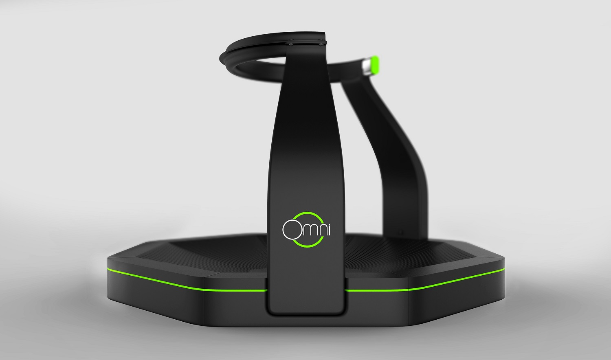
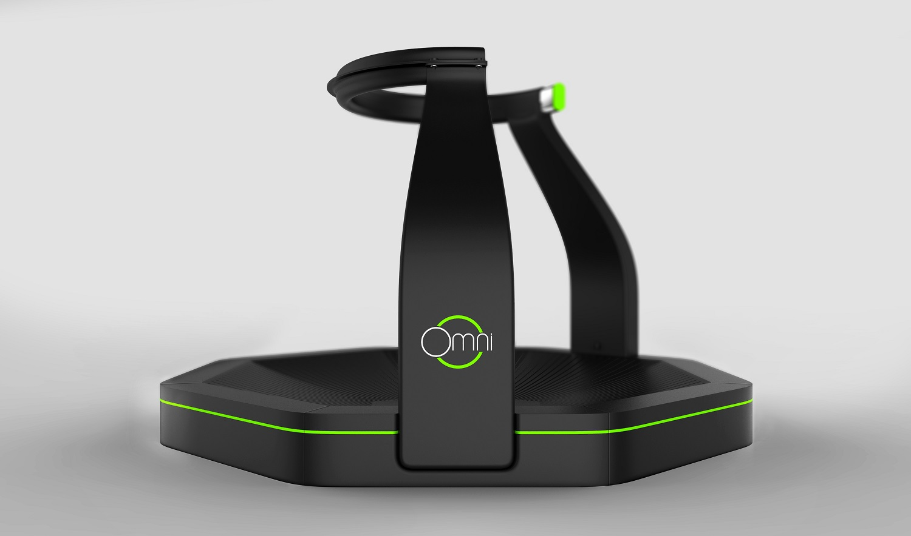
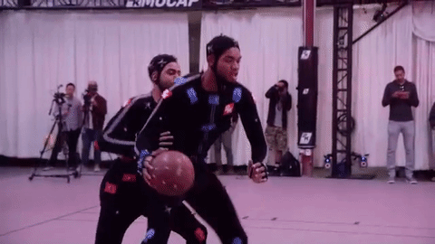

Immersive Gaming System: I Had the idea of developing a perfectly immersive gaming station since when I was younger. I Was a little heartbroken and a little excited, but most definitely intrigued when I saw someone testing a similar setup. The setup consists of a VR console and a multi-way (marketed as "omnidirectional") treadmill. The project will also include experiments with other, newer technologies such as a full-body haptic suit and a motion detecting smart-suit. Even though others may have beat me to realizing my childhood idea as a reality, the product itself is far from perfect.
I was inspired by a lot of pop culture media such as isekai genre anime and the hollywood movies that came after it. The trend of garbage yet popular isekai based animes and movies that has increased exponentially in the past years shows evidence that the general public is interested in the idea of such a system. One such example would be an Anime called SAO which received bad critic for the majority of it's runtime and yet still manages to be one of the most popular anime. Western media has also shown interest in this idea by exploring the concept through movies such as "Ready, Player One", "Alita: Battle Angel", "Pixels", "Wreck it Ralph" and its sequel. The public has also shown this interest for quite some time as can be seen from older movies that received succes in theatres such as "Tron: Legacy". There is also a steady increase in gaming in general that is contributing to the succes of the gaming industry that can be seen from the increase in professional gamers, leagues and competitions. The competitions have even been big enough for a world cup to be held for some online game titles such as "DotA2", "Overwatch", and many others. Even, older games such as "Smash 64" still has a huge scene and following. So, the gaming industry is a good industry to invest in.
One of the major shortcomings is that I had wanted the setup to be able to implement complex movements such as rolling as a gameplay mechanic. A version of this could be seen in the Assassin's Creed movie where the Animus allows the user to tumble around in game or in their case in the "simulation". However, the machine itself mounts to the back of the user, so any in game rolling would not be logical since the machine itself would be in the way of the user and the ground during a rolling motion.
Another feature that I would like to add is a jump feature which would detect when both of the player’s feet are not touching the platform and registers it as a jump. In this case, the smart clothes would be really helpful in determining what movement a player is doing while not in contact with the platform, for example: is the player jumping or rolling. Some problems that would arise by enabling this includes the additional space that the system would need to accommodate a player’s horizontal movement while in the air since the treadmill won’t be able to keep the player centered.
All of the previous discussions have been about enabling users to be fully immersed in an experienced with the boundaries of those experiences being a somewhat realistic experience that people might actually have in the real world (to a certain extent). The question is: how would the gaming system or platform accommodate games that includes unrealistic experiences such as flying.
An aspect of the system that might be overlooked by the general gamer yet is still extremely important to talk about is ethics. How much pain can a smart suit inflict to its user. How does the system prevent hackers or cheaters from accessing other player’s gaming system and doing malicious things such as turning on the electric nodes and administering shocks. How would the system prevent the user’s personal information from getting stolen, such as body proportions (when using a body suit) or even their movement habits.
The next step is to enable players to actually feel the game with their sense of touch, I have always wanted a system that has the ability to give the users proper and realistic feedback. There are prototypes of gaming suits that is also pursuing a similar, if not the same, goal with the method of zapping nerves with electricity and haptic feedback. The technology comes as a wearable bodysuit by the name of “Teslasuit”. Another suit that is designed for VR gaming is called “E-Skin” that is being developed by a start-up company in Japan.
 

Of course, the existing technologies should not be forgotten. They are after all, the staple of the whole system. The omnidirectional treadmill has been tested by several different companies such as the "Infinadeck" and the "Virtuix Omni" since around the year of 2017. VR headsets have also been increasing in popularity in the past years, ranging from the branded luxury items that sells for a few hundred dollars to the cardboard boxes that you can get for under 10 dollars.
For the player movement itself, instead of waiting for prototypes of suits that might never be useful to be finished. We can instead use a technology that is already being used in the gaming industry. To be exact, the borrowed technology will be coming from triple A sports titles such as NBA2K games and the FIFA line of games. Production companies have been using mapping technologies to mimic actual players’ movement to make the game look more realistic for their fans. However, the difference in the usage is that production companies have an extended amount of time to process the players’ movement and implement it in their games, whereas an AR or VR gaming system would have to process the input in real-time.
A ton of lines of codes has to be written in order for this project to be realized.
Another thing to discuss is the probability of such a product to achieve mainstream success. The price of such a system will not come even close to being cheap or affordable to the general public. Even the latest gaming laptops with the best graphics card and a powerful processor is getting high up there in the price ranges, even rivalling some high-end luxury laptops. Getting the system up and running with all of the aforementioned functionalities will not end up in a product that is easily marketable just because of the massive price-tag that it is going to have. Therefore, not a lot of businesses, not even the largest gaming companies are going to be excited in undertaking such an expensive and high-risk project. Especially when this is a new area in gaming or technology, any development done in this area will mostly be experimental and failures may, and most likely will, cost a lot of money. Therefore, it is safer for companies to just wait for some other company to make the successful breakthrough and just follow suit in their footsteps. The counterargument to this would be that patents may get in the way of copycats. However, we all know that patents only work to a certain extent since in reality, copycats are anything but rare.
If the project is successful, this will be the next big breaktrhough in both the gamin industry and in the technology industry in general. A successful development in this field will be useful for future generations as a base to expand on an experiment with other technologies in order to further progress technological advancements.